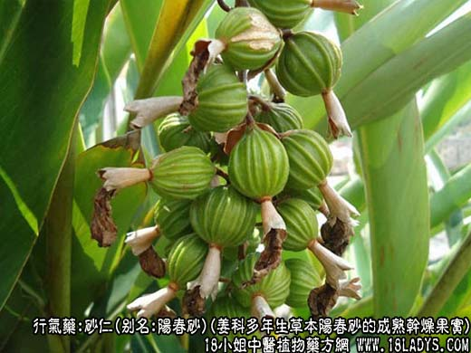
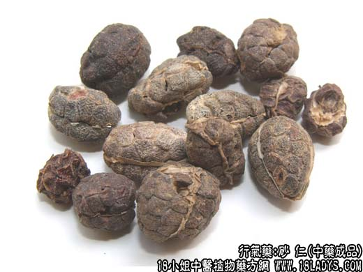
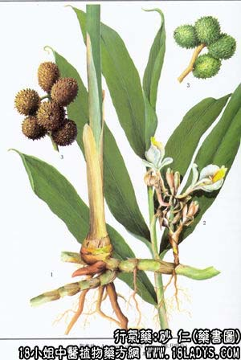

本品为常用中药。始载于《开宝本草》，原名“缩砂密”、商品分阳春砂和缩砂仁两种。
1、阳春砂
别名：阳春砂仁。
来源：为姜科多年生草本植物阳春砂的成熟干燥果实。均为栽培。
产地：主产于广东省阳春、阳江、；罗定、信宜、茂名、恩平、徐闻等县。
性状鉴别：蒴果略呈钝角三棱椭圆形或卵圆形，长1.2~2厘米，直径0.8~1.5厘米。外表皮棕色，密生突起的段软刺，顶端有花柱基残痕呈小圆点状态突起，底部具短柄，常数个蒴果连生于总果柄上。果皮薄略革质， 易纵向剥裂。内含种子多数，集结成略与外壳相同的团状，为纵薄膜隔为三瓣，每瓣有种子6~15粒。种子呈颗粒状态，多角形，长2~3毫米，宽约2毫米。表面棕红色，有菲薄膜衣包裹，显细皱纹。质略坚实，破开后，内 部灰白色，油润。气芳香，味辛凉微苦。
以个大成熟，籽仁饱满，棕红色，气味浓厚者为佳。
2、缩砂仁
别名：西砂仁。
来源：为姜科多年生草本植物缩砂的干燥成熟果实（壳砂仁）或种子团（砂仁）以及单粒种子（砂米），少为栽培。
产地：国内主产于广西、广东、云南等地。国外主产于越南、泰国、缅甸、印尼等地。
性状鉴别：壳砂仁形状略与阳春砂相似，唯蒴果略显瘪瘦，外壳皮淡棕色，刺状突起较稀疏，种子灰棕色或灰褐色。气味较阳春砂稍淡。剥去外壳的种子团称“砂仁”。呈三棱球形或三棱长圆形，长 0.8~1.5厘米，直径0.8~1.2厘米。经加工整理后，外表被有一层白色粉霜（蛤粉）。筛选出的较大颗粒称“砂王”，小颗粒称”砂头“，散碎单粒称”砂米“，剥下的外壳称”砂 壳“。国产与进口品无区别。
以种子成熟，饱满，香凉味浓者为佳。
主要成分：缩砂种子含挥发油，其中主要为右旋樟脑、冰片、醋酸冰片酯、澄花叔醇等。阳春砂亦含挥发油。
药理作用：理气宽胸，有健胃作用。
炮制：壳砂捣碎生用；砂仁捣碎生用或盐水浸炒，砂壳生用。
性味：辛，温。
归经：入脾、胃、肾经。
功能：理气解郁，开胃消食，安胎。
主治：胃腹胀痛，气滞食积，呕吐，泄泻，痢疾，胎动不安等症。
临床应用：1、用于治疗消化不良，常与木香配伍（木香、砂仁配合能增强行气止痛和健胃作用）。如属急性消化不良，加配枳实、白术；如属气虚所致慢性消化不良，或病后脾胃虚弱而致少腹闷，须调补脾胃以善后 ，则配补气药，方入香砂六君汤、香砂养胃汤。
2、用于治疗寒湿泻痢。如属急性肠炎，可用砂仁、苍术各6g研末服或煎汤服；如属慢性痢疾，兼有腹痛脘闷、食欲不振者，可在治痢方剂内加砂仁、木香，以加强行业止痛和止泻作用。
3、用于治疗虚寒胃痛，辅助理中汤或吴茱萸汤，加强止痛作用。
4、用于治疗妊娠呕吐（恶阻）、胎动不安而与脾胃虚寒有关者，可用砂仁和胃、止呕、安胎，方如香砂六君汤。
使用注意：阴虚内热者不宜用不品；如无砂仁，可用益智仁代。益智仁性味与砂仁同，也有健胃作用。又可配木香加入陈夏益气汤中治消化功能不足。
用量：1.5~6g，一般分量宜轻。
处方举例：1、香砂六君汤。广木香3g（后下），春砂仁4.5g，陈皮4.5g，制半夏9g，党参12g，白术9g，茯苓9g，甘草3g，水煎服。
2、香砂养胃丸。成药。每服9g，每月早晚各一次，温开水送服。如无成药，可按下方配剂：广木香2.4g，春砂仁3g，党参12g，白术12g，苍术9g，厚朴6g，陈皮3g，香附6g，蔻仁3g，云苓、生姜各6g，甘草6g，大枣 5枚，水煎服。
砂仁壳：性味功用与砂仁同，但力较薄。用量1.2~ 2.4g。
注：国产砂仁除以上两种外，还有几种土砂仁。进口砂仁中也常混杂有部分不同形状的伪品，分述如下：
1、海南壳砂。呈椭圆形，长约2厘米以上，果皮淡棕色，具片状突起。
2、海南土砂仁。果实外形与阳春砂相似，唯色较淡。
3、福建土砂仁。为“和山姜”的种子团（日本称伊豆缩砂），较阳春砂瘦小，种子团略为纺锤形，长1~1.8厘米，直径5~7毫米，表面黄棕色，气弱，味辛。
4、江西土砂仁。为“山姜”的种子团，长约1厘米，直径约8毫米，种子数较少，每室4~7粒，外壳皮紧结无刺（略似益智外壳），气弱，味辛而涩。
5、湖南土砂仁。产陵零地区，种子团呈团球形或纺锤形，长0.6~1.5厘米，直径0.6~0.8毫米。表皮淡黄色或灰黄色，有的稍带灰绿色，每室种子4~7粒。外壳皮光洁无刺，淡黄棕色，不甚坚韧，易剥。气微香，味辛 凉不苦，类似砂仁味，但较逊。
6、云南红砂仁。为姜科植物类缩砂仁的干燥果实，形态与缩砂果实类似，内种子团与砂仁完全相同，唯气不香，味酸浊而微苦辛。
7、进口砂仁中的伪品。一种呈纺锤形，长3~5厘米，中部直径约1厘米，两端渐细尖，种子粒砂仁大3~4倍，气无，味微辛苦，易与砂仁区分；另一种形如桑椹，种子粒较砂仁大一倍左右，呈不规则的卵圆形，气无， 味微苦淡，这两种伪品究属何科，何种尚待了解。此外还混有姜科小蔻的种子，它的特点是每一单粒表面有一条明显的种脊纵沟纹，亦可区别。